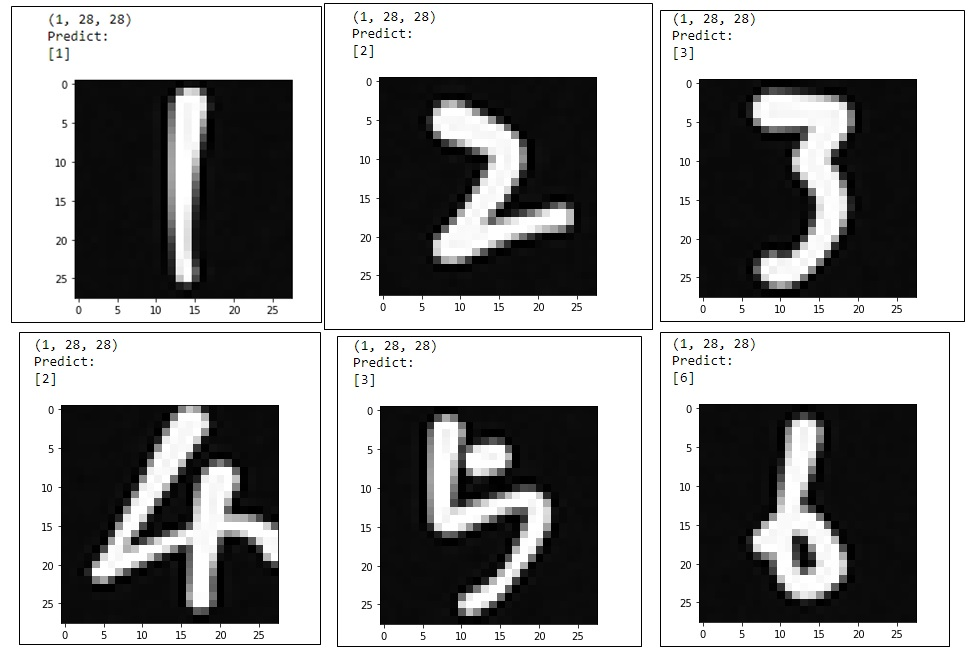

MNIST手寫數字辨識
AI實作
本次MNIST手寫數字辨識使用Keras，訓練模型並且親自手寫數字給予模型辨識。
程式實作
-
工具/資料準備
-
整理資料
-
神經網路模型建立
-
函數設定
-
訓練模型
-
儲存模型
-
工具準備/使用模型
-
轉換圖片/預測圖片
下載資料: Tensorflow準備好的mnist資料 (60000筆訓練資料，10000筆測試資料)
import tensorflow as tf
mnist = tf.keras.datasets.mnist
(x_train, y_train), (x_test, y_test) = mnist.load_data()
將28*28圖片中的數字像素/255，使數值都在0~1之間便於計算(本次模型僅使用全連結層，因此不須轉換圖片為四維陣列；若使用卷積層，則必須轉換為[ID,H,W,Channel]的四維陣列)。
x_train, x_test = x_train / 255.0, x_test / 255.0
x_train(訓練資料), x_test(驗證資料) => 28*28的圖片資料 ; y_train, y_test => x的答案(標籤)
模型: 平坦層 => 全連結層(隱藏層) => Dropout層 => 輸出層
model = tf.keras.models.Sequential([
# Flatten:將卷積、池化後的輸出(特徵圖)拉平，轉換維度後才能輸入進全連結層(密集層)
tf.keras.layers.Flatten(input_shape = (28,28)),
# Dense:全連結層 (密集層)，指定128個神經元, ReLU:將負向量轉換為 0
tf.keras.layers.Dense(128, activation='relu'),
#Dropout層: 防止過度擬合，丟棄20%的神經元
tf.keras.layers.Dropout(0.2),
#最後一層:輸出層，輸出0~9的分類值, softmax: 最大為1(總機率)
tf.keras.layers.Dense(10, activation='softmax')
])
使用adam梯度下降法、交叉熵損失函數、計算準確率。
# model每層定義好後需要經過compile，定義訓練參數
#loss: sparse_categorical_crossentropy一種損失函數
#adam: 一種常用的梯度下降法
#accurancy: 精度
model.compile(optimizer='adam',
loss='sparse_categorical_crossentropy',
metrics=['accuracy'])
週期五次(epochs = 5)、顯示訓練資料結果(verbose = 2)
model.fit(x_train, y_train, epochs=5)
model.evaluate(x_test, y_test,verbose = 2)
model.save('mnist_test')
可開設新的檔案，讀取儲存的模型。
import numpy as np
from keras.models import load_model
import matplotlib.pyplot as plt
from PIL import Image
#載入模型
model = load_model('mnist_test')
將本人手寫數字，讀取後整理成模型可接受的資料型態(灰階圖轉成陣列、除255)，得出預測結果。
#轉換圖片的function
def pict(name):
img = Image.open(name)
#修改圖片成長*寬 = 28*28
reIm = img.resize((28,28),Image.ANTIALIAS)
#convert('L')圖片改為灰階，再將圖片轉換成陣列
im_arr = np.array(reIm.convert("L"))
return im_arr
#輸入圖片名
im1 = pict('7.jpg')
#展示圖片
plt.imshow(im1,cmap=plt.get_cmap('gray'))
plt.show
#將圖片改為model可接受的型態
im1 = im1.reshape(1,28,28).astype('float32')
im1 = im1/255.0
print(im1.shape)
#預測該圖片的數值為何
predict = model.predict_classes(im1)
print("Predict:")
print(predict)
